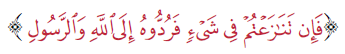
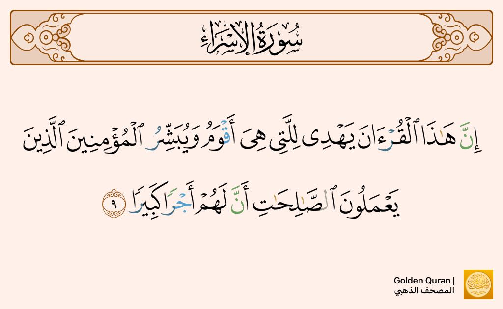

1-باب في مرجعيه الوحي وشموليته ومركذيه التسليم لله ولرسوله
يحتوي العنوان على أربعه أمور:
أولا: فيه بيان مرجعيه الوحي
ثانيا: فيه وصف لهذه المرجعيه بأنها شامله
ثالثا: بيان أهميه التسليم
رابعا: فيه بيان أن هذا التسليم أمر مركذي في الدين والشريعه
يشتمل هذا الباب على ثمانيه أيات و خمسه أحاديث
مقاصد الباب وما هو مطلوب منا تجاه مرجعيه الوحي:
1-التعظيم
2-التسليم
3-التحكيم
4-التقديم
5-الأستغناء و الأستبشار
ما هي الثمرات التي تنتج عن مرجعيه الوحي
1- تنتج الهدايه
قال الله تعالى: 
من مقاصد الأيه التحكيم
ومن معاني الأيه أنه أذا تنازعتم في الأمر أنتم أيها المؤمنون بينكم وبين بعضكم أو بينكم وبين ولاه أمركم فتحاكموا الي الله وكتابه ورسوله وهذا يبين التحكيم من جهه والتقديم من جهه أخرى
قال الله تعالى: 
من مقاصد الأيه التعظيم والأستغناء
فهو يدعو الي الأستغناء عن السبل الأخرى غير سبيل الله